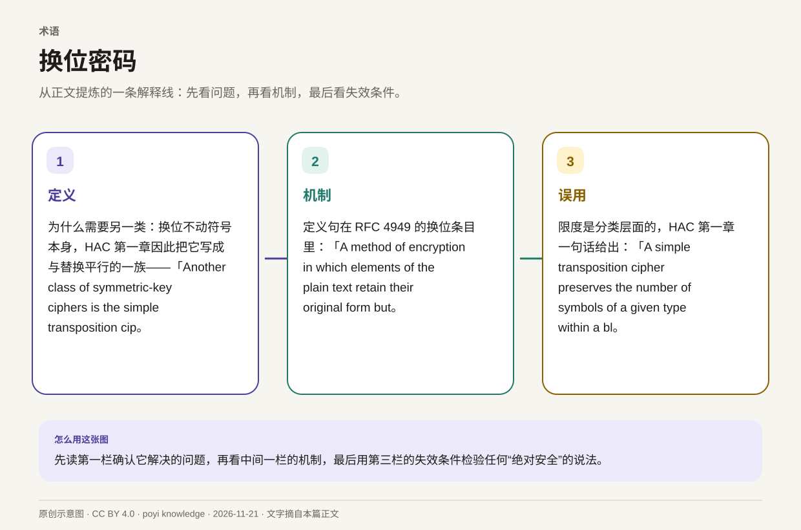

原理与机制
术语：换位密码（Transposition）。定义句在 RFC 4949 的换位条目里：「A method of encryption in which elements of the plain text retain their original form but undergo some change in their sequential position.」条目同一行给出对照词 substitution，两个定义互为补集：替换保持位置不动、把元素换掉，换位保持元素不动、把位置换掉。该条目只带一条标了密码学域的定义，也不带年代。

为什么重要
为什么需要另一类：换位不动符号本身，HAC 第一章因此把它写成与替换平行的一族——「Another class of symmetric-key ciphers is the simple transposition cipher, which simply permutes the symbols in a block.」同节接着给出它的定义、解密所需的逆置换，以及可重排方式的数量由块长决定这一事实。这个范畴存在的理由是它提供同一批符号换个顺序这一独立自由度，与替换的正交组合才是后续构造叙述的基础。
应用与实例
用法由定义的范围界定：它只规定元素保形、位置改变，具体如何选顺序——分栏、路径、按什么密钥排布——都在定义之外，因此该条目不写出任何特定栏式或路径换位的形态，该条目引用的这两份留存文本也没有展开这些细节。可核证的用法层次是分类用法：条目用一个 Compare 标记把该词与替换相互绑定，使两者成为必须对读的一对；而与替换条目不同，它没有第二个跨领域的词义。
边界与攻击面
限度是分类层面的，HAC 第一章一句话给出：「A simple transposition cipher preserves the number of symbols of a given type within a block, and thus is easily cryptanalyzed.」块内各类符号的计数不变，明文的统计结构因此对攻击者仍然可用，同节据此称这类密码容易被破解。至于把两类组合起来以弥补单层不足，是同节之后的 1.5.3 节给出的出路，该条目不把它算作 1.5.2 的结论。
历史与背景
版本事实：该条目引用的两份留存文本都没有给出这一类的起源年代。HAC 第一章两次触及世界大战却都未点名换位：开篇史述说的是密码学整体「played a crucial role in the outcome of both world wars」，注记则记第二次世界大战中有若干古典体制遭到分析。同一批注记把对称密钥加密的漫长历史归给若干转引的记述，只把单表替换与换位列为分类一节的对象。目录行另外登记了第三份留存件——一份古典密码讲义，它把栏式方法在欧洲的使用定到十九世纪、在军中的使用延至第一次世界大战，并经普鲁塔克记述一种早期的斯巴达装置；但这份讲义把第一次世界大战的最高评价给的是换位与替换的组合，而非单独的换位。该条目没有引用该讲义，因此它的断代留在元数据轴上，正文只登记手册定义该词、并与替换并列叙述的位置。
逐步示例与核验
定义检查模型
上位概念 → 区别特征 → 正例 → 反例 → 易混边界。正例必须落在外延内；反例必须刚好跨过边界；同义词不能代替定义。
参考出处
- Wikipedia search entry for 换位密码. https://zh.wikipedia.org/w/index.php?search=%E6%8D%A2%E4%BD%8D%E5%AF%86%E7%A0%81
- RFC 4949: Internet Security Glossary, Version 2. https://www.rfc-editor.org/rfc/rfc4949